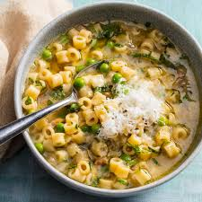

Pasta i Picelli

Pasta with peas and bacon!
It's light and low in calories, but is very nutritious. It is also very budget friendly and convenient
Ingredients
- 1 tablespoon Olive oil
- 200 g/8oz Pancetta or Bacon
- 1 leek or 3 green onions
- 250g/8oz Ditali or Ditalini pasta
- 3 cups Hot chicken stock
- 2 cups frozen green peas
- 1/2 cup Parmesan cheese
- Salt to taste
- 2-3 fresh mint leaves (optional)
- 2-3 basil leaves
Steps
- Heat the oil in a large and deep pan and add the diced pancetta or bacon and cook until most of the fat is rendered, add the sliced leek and saute over low heat for 5 minutes. Then add the pasta and hot stock, bring to a boil and cook for 6 minutes, stirring once in a while to ensure the pasta is not sticking to the bottom.
- Add the peas and cook for 2 minutes longer. Then stir in the grated cheese and the fresh herbs, season with salt to taste.
- Serve with additional Parmesan cheese.
Home